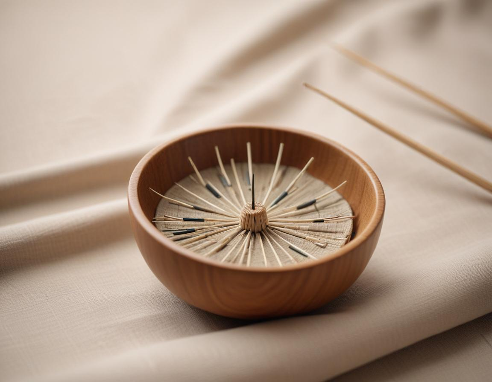

건강 칼럼 · 한방신경정신과
숨이 막히고 심장이 터질 것 같았다면, 공황장애 한방 치료 이야기

공황장애란 무엇인가요?
공황발작은 특별한 위험이 없는데도 몇 분 안에 공포가 최고조에 이르는 경험입니다. 심장이 빠르게 뛰고, 숨이 막히거나 질식할 것 같고, 손발이 저리거나 어지러우며 "이러다 죽는 것 아닌가" 하는 두려움이 함께 몰려옵니다. 이런 발작이 반복되고 다음 발작에 대한 걱정이 한 달 이상 이어지면서 지하철, 엘리베이터, 마트처럼 빠져나오기 어려운 장소를 피하게 되면 공황장애를 의심합니다. 회피가 길어질수록 혼자 외출하기조차 어려워질 수 있어, 생활 반경이 좁아지기 시작한 시점에 도움을 받는 것이 회복을 앞당기는 길입니다.
공황발작과 심장 질환은 어떻게 구분하나요?
공황발작의 신체 증상은 협심증이나 부정맥과 비슷해 스스로 구분하기 어렵습니다. 처음 겪는 가슴 통증, 쥐어짜는 듯한 압박감, 식은땀을 동반한 통증이라면 119 또는 응급실을 먼저 이용하세요. 심전도 등 검사에서 이상이 없다는 확인을 받은 뒤에는 "몸이 위험한 것이 아니라 경보가 과하게 울린 것"이라는 이해가 회복의 첫걸음이 됩니다.
한의학은 공황장애를 어떻게 설명하나요?
한의학 고전에는 이유 없이 놀라고 가슴이 뛰는 증상을 경계(驚悸), 더 심해 가슴이 계속 요동치는 상태를 정충(怔忡)이라 기록했습니다. 심장의 기운이 허약해 쉽게 놀라는 심담허겁, 담음(痰飮)이 쌓여 가슴이 답답하고 어지러운 담화요심 등으로 원인을 나누어 치료 방향을 정합니다.
공황장애 한방 치료는 어떻게 이루어지나요?
1. 침 치료
손목 안쪽 내관(內關), 가슴 한가운데 단중(膻中), 명치 아래 거궐(巨闕) 등을 활용해 가슴의 압박감과 두근거림을 완화하는 데 중점을 둡니다. 공황장애만을 대상으로 한 침 연구는 아직 많지 않아, 다른 치료와 함께 보조적으로 활용하는 것이 바람직합니다.
2. 약침
발작 이후 굳어 버린 가슴 주변과 목·어깨 근육에 약침을 적용해, 호흡이 얕고 짧아지는 패턴을 풀어 주는 데 도움을 줍니다.
3. 한약
놀람과 두근거림이 두드러지면 계지가용골모려탕 계열, 감정 기복이 크고 쉽게 서러움을 느끼면 감맥대조탕 계열을 바탕으로 체질에 맞게 처방합니다.
공황발작이 왔을 때 할 수 있는 대처 방법은?
- 발작은 대부분 10분 안팎에 정점을 지나 가라앉는다는 사실을 떠올립니다.
- 코로 4초 들이마시고 입으로 길게 내쉬며, 날숨을 들숨보다 길게 유지합니다.
- 주변 사물 다섯 가지의 이름과 색을 소리 내어 말하며 주의를 현재로 돌립니다.
- 발작이 지나간 뒤에는 피했던 장소를 조금씩 다시 경험해 보는 연습을 합니다.
자주 묻는 질문 Q&A
- Q1. 공황장애 약을 먹고 있는데 한의원 치료를 받아도 되나요?
- 병행할 수 있습니다. 복용 중인 약을 알려 주시면 그에 맞춰 한약 처방을 정하며, 정신과 약은 담당 의사와 상의 없이 줄이지 마세요.
- Q2. 침을 맞다가 발작이 오면 어떡하나요?
- 시술 전 상태를 확인하고 편한 자세에서 적은 수의 침으로 시작합니다. 불편하면 언제든 말씀하시면 바로 중단합니다.
- Q3. 한방 치료 효과는 언제쯤 느낄 수 있나요?
- 개인차가 크지만 수면과 가슴 답답함 같은 동반 증상이 먼저 변하는 경우가 많습니다. 2~3주 단위로 경과를 점검하며 치료를 조정합니다.
- Q4. 운전이나 지하철 이용이 두려운데 어떻게 해야 하나요?
- 무리하게 피하지도, 한 번에 극복하려 하지도 않는 것이 좋습니다. 짧은 구간부터 단계적으로 시도하고, 몸의 긴장이 줄어드는 시기에 맞춰 범위를 넓혀 갑니다.
- Q5. 어떤 경우에는 응급실이 먼저인가요?
- 처음 겪는 가슴 통증, 의식 저하, 한쪽 팔다리 마비나 말이 어눌해지는 증상이 있다면 공황보다 응급 질환을 먼저 의심하고 119를 이용하세요.
참고 자료
- 국가정신건강정보포털, 공황장애 정보 — 원문
- MSD 매뉴얼 일반인용, 불안 장애의 개요 — 원문
- Effectiveness of acupuncture on anxiety disorder: a systematic review and meta-analysis of randomised controlled trials. Annals of General Psychiatry, 2021 — 원문
※ 이 글은 일반적인 건강 정보이며, 개인의 상태에 따라 치료 방법과 결과는 다를 수 있습니다. 정확한 진단과 치료는 진료를 통해 결정됩니다. 침·약침 시술 후 드물게 멍, 통증 등이 생길 수 있습니다.